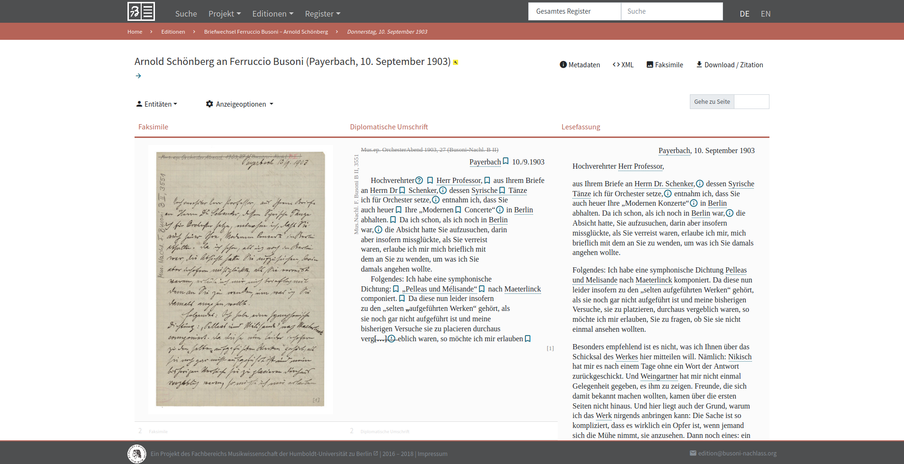
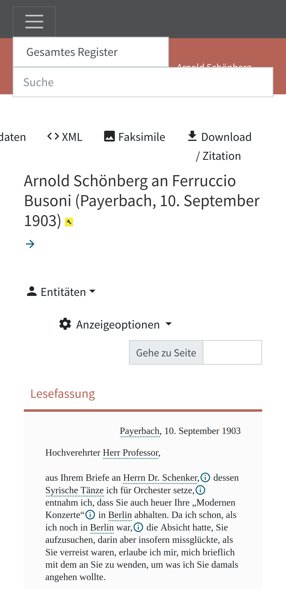
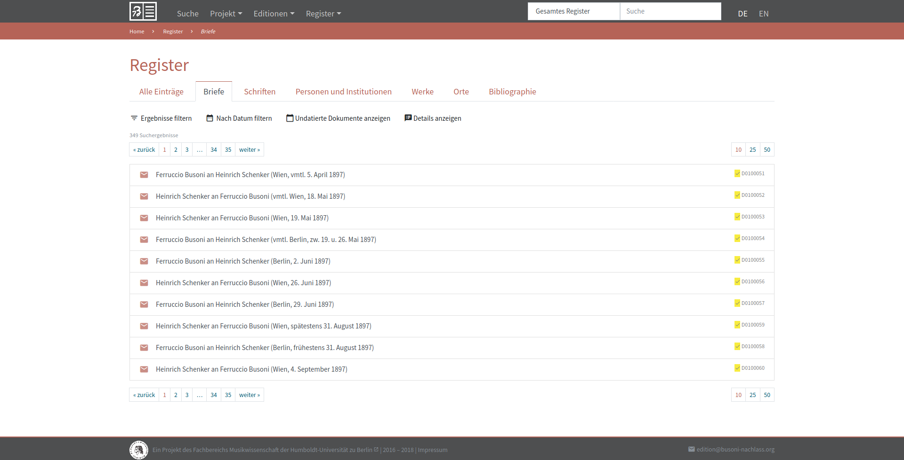
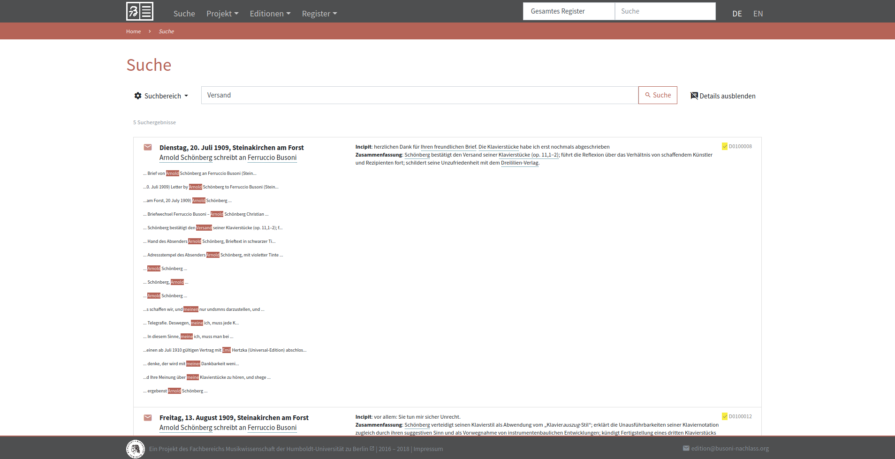
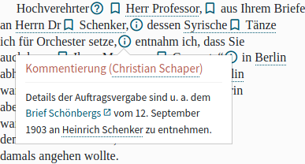
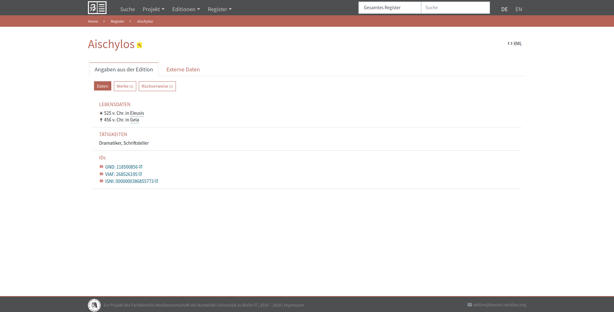
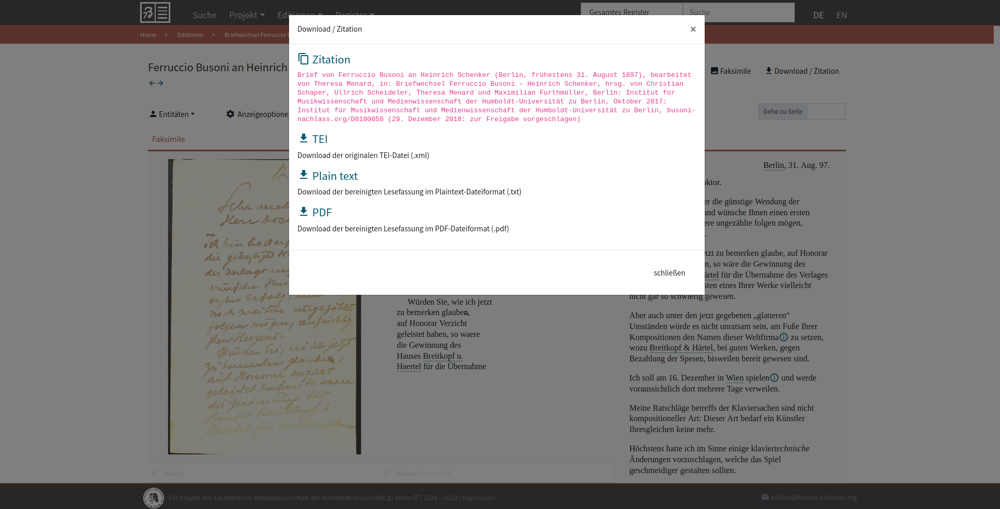

Review of the Busoni Digital Edition
Table of Contents
Abstract
Ferruccio Busoni – Briefe und Schriften is a digital scholarly edition of letters and other writings from the literary estate of the Italian composer Ferruccio Busoni (1866-1924). It aims to transcribe and richly encode these documents as well as publish them along with a critical apparatus and digital facsimiles. The project is currently work in progress – at the moment of this review – and successfully functions as a community project with contributions from university students. Despite minor shortcomings which are perfectly normal for a project in this stage, the Busoni edition leaves an excellent overall impression and stands out in regard to data quality and standards compliance.
Introduction
In late 2015, as part of a seminar at the Institute of Musicology, students of the Humboldt University in Berlin started working on a digital edition of documents from Ferruccio Busoni’s literary estate, kept by the Berlin State Library. It is by no means a coincidence that the Busoni edition came about in Berlin. The Italian composer and pianist owned an apartment in Schöneberg and lived there intermittently during the second half of his life.
The project and its goals

It’s worth mentioning that the Busoni digital edition refers to two other well known projects as sources of inspiration, both conceptually and technically: Briefe und Texte aus dem intellektuellen Berlin um 1800 1 and the Carl Maria von Weber-Gesamtausgabe 2 (WeGA). This particularly applies for the edition guidelines and the technical implementation of the Busoni web app. It’s refreshing and inspiring to see a digital scholarly edition emerging as a collaborative academic community project carried out (technically and content-wise) by students and very transparently taking influence from mature, established projects of similar nature.3 The reuse by the Busoni edition testifies to the quality of the WeGA-App and its documentation and sets a laudable precedent for future projects. It shows that projects with limited resources can profit from the outcomes of projects which can afford investing in elaborate software solutions, provided the latter follow established standards and best practices4 for research software documentation and publishing.
Technology and data model
The current web app was released in September 2018 and supersedes an older, technologically and functionally more modest version. The old app relied on generating static HTML via XSLT stylesheets. The new one is a dynamic eXist-db app forked, as previously mentioned, from the WeGA-App developed by Peter Stadler. The project most certainly profited substantially from this transition, considering the inherent limitations of a static website. It is, however, unfortunate that the old version has not been retained either online as an archived and referenceable publication or simply in the form of a publicly available Git repository.
While the project generally does an excellent job of documenting itself, it remains unclear from the project description and edition guidelines how the data input is carried out. A rough description of the workflow and tools used to input and mark up the data would be a helpful addition to the project documentation.
The data model of the Busoni edition is TEI P5 compliant and thoroughly documented in the edition guidelines.5 Each document and entity of the edition is referenceable by using a system of internal, semantic identifiers which leverage a set of prefixes documented in the guidelines. Authority file URIs are provided for named entities, and correspondence metadata is encoded in close accordance with the TEI correspondence description standard.6 The fact that the edition does not provide an API for publishing its correspondence metadata in CMI format7 is a significant drawback. However, the Busoni edition manages to implement established standards for digital scholarly editions of letters in an almost exemplary manner. The metadata also includes a detailed revision history, documenting the authorship, date and content of each processing step.
The text is transcribed diplomatically and is complemented by normalized orthography and punctuation. Normalized text phenomena are used for generating the reading view in the web app. The manuscript layout is encoded in detail, including line breaks, alignment and rotation. Indices are provided for a fairly standard set of entities: places, people, institutions, and writings. Letters, the dominant type of edited documents, include a summary. The Busoni edition takes on the task of implementing an overall ambitious data model and so far has succeeded in doing so.
User interface

 

While the typographic choices might not be optimal, yet, the overall layout and structure of the document view is well thought through and easy to use. Any combination of display versions can be configured using a set of toggles in a dropdown menu. Document metadata and a list of mentioned entities are hidden in easily accessible dialogs. The facsimile view uses the OpenSeadragon viewer9 to display high quality, high resolution images, most of which are provided by the Berlin State Library. As an explicitly experimental feature, the Busoni edition offers a fairly rough PDF export for each edited document, based on the reading version of the transcribed text.
The fulltext search feature can be used on edited documents and/or indices. Keywords in context for the search results can be toggled on optionally. A search query with the KWIC supplement activated is perceptibly sluggish and confusingly mixes in certain keywords which the user did not input for a specific search query. While a basic functionality is already available, the fulltext search most certainly leaves room for improvement regarding performance and precision.
From a user perspective, the separation of the fulltext search functionality from the overview page with metadata filters seems very impractical. Being able to use these features simultaneously to query for documents would enable the user to leverage the specific advantages of a digital edition much better. For instance one could carry out a fulltext search and subsequently reduce the search results by specifying an addressee or a timespan. If this separation is not due to any substantial technical obstacles, it might be worth considering merging the functionalities of these two pages in a future version, if the project resources allocated to web development allow it, of course.

Research data

Another aspect which makes up for the lack of a data versioning in the web app is the fact that the entire corpus of TEI XML encoded documents are made publicly available as a repository on the university GitLab.10 The repository directly reflects the current status of the research data as work in progress and offers full transparency regarding each processing step. A further GitLab repository containing the fork of the WeGa-App11 is also publicly available at the time of this review but not linked in any way from the project description or any other page of the website.
The research data quality of the Busoni edition is satisfyingly high. In addition to the aforementioned aspects, the edition dataset offers extensive metadata, has an open license (CC BY-NC-SA 4.0), is interoperable, thoroughly documented and highly accessible for manual use via downloading individual documents or the Git repository containing the data. It's a downside that the edition lacks machine readability and should facilitate it by offering the data as a public web service (a feature already implemented in the related Weber-Gesamtausgabe).
Conclusion
The Busoni edition is a remarkable digital publication, considering the context in which it emerged and the fact that it is partly realised by students as part of learning the craft of digital scholarly editing. For an undertaking of this nature, the project aims for very high standards and manages to fulfill most of them so far and leave a fairly good impression ahead of its completion. The data model and its implementation are rich and tidy, and the interface has plenty of useful functionalities despite still being rough around the edges. The project is well documented through its edition guidelines and is well citable. Sadly, the project description currently seems to suggest a stagnation of the efforts to finalize the editorial work.
The work done by the students, student employees and coordinators of the project is definitely praiseworthy despite its imperfections and can be seen as exemplary for future projects aiming to build a digital scholarly edition by embedding its workflow in an academic curriculum. There are, however, several aspects of the edition (e.g. suboptimal text layout, faulty fulltext search, no web APIs etc.) that still need to be addressed in order to meet the requirements of a modern digital scholarly edition.
Notes
- Briefe und Texte aus dem intellektuellen Berlin um 1800. https://web.archive.org/web/20200201101652/https://www.berliner-intellektuelle.eu/ (German). ↑
- Carl-Maria-von-Weber-Gesamtausgabe. Digitale Edition. https://web.archive.org/web/20190421060849/https://www.weber-gesamtausgabe.de/de/Index (German). ↑
- Ferruccio Busoni – Briefe und Schriften. Projektbeschreibung. https://web.archive.org/web/20200201103054/https://busoni-nachlass.org/de/Projekt/Projektbeschreibung (German). ↑
- Wilson, Greg, Jennifer Bryan, Karen Cranston, Justin Kitzes, Lex Nederbragt and Tracy K. Teal. 2017. Good enough practices in scientific computing. PLoS Comput Biol 13(6). https://doi.org/10.1371/journal.pcbi.1005510. ↑
- Ferruccio Busoni – Briefe und Schriften. Editionsrichtlinien. https://web.archive.org/web/20200201111118/https://busoni-nachlass.org/de/Projekt/Editionsrichtlinien (German). ↑
- TEI P5: Guidelines for Electronic Text Encoding and Interchange, Section 2.4.6. Correspondence Description, version 3.6.0, https://tei-c.org/release/doc/tei-p5-doc/en/html/HD.html#HD44CD. ↑
- Dumont, Stefan, Ingo Börner, Dominik Leipold, Jonas Müller-Laackman, Gerlinde Schneider. 2019. Correspondence Metadata Interchange Format, in: Encoding Correspondence. A Manual for Encoding Letters and Postcards in TEI-XML and DTABf, ed. by Stefan Dumont, Susanne Haaf and Sabine Seifert. https://encoding-correspondence.bbaw.de/v1/CMIF.html. ↑
- Digitale Briefedition Alfred Escher. Briefe. https://web.archive.org/web/20200201114126/https://www.briefedition.alfred-escher.ch/briefe/ (German). ↑
- https://web.archive.org/web/20200201114734/https://openseadragon.github.io/. ↑
- Please note that the GitLab link in the project description page points to a publicly inaccessible repository at the time of this review. A publicly accessible repository containing the edition data seems to be located at https://scm.cms.hu-berlin.de/busoni-schriften/busoni-data-public. ↑
- https://scm.cms.hu-berlin.de/busoni-schriften/WeGA-WebApp-lib. ↑
@article{busoni-nachlass,
author = {Costea, Theodor},
title = {Review of the Busoni Digital Edition},
journal = {RIDE – A review journal for digital editions and resources},
number = {12},
year = {2020},
doi = {10.18716/ride.a.12.5},
url = {https://doi.org/10.18716/ride.a.12.5},
}TY - JOUR
AU - Costea, Theodor
TI - Review of the Busoni Digital Edition
T2 - RIDE – A review journal for digital editions and resources
IS - 12
PY - 2020
DA - 2020/07
DO - 10.18716/ride.a.12.5
UR - https://doi.org/10.18716/ride.a.12.5
PB - Institut für Dokumentologie und Editorik e.V.
LA - en
ER - Costea, T. (2020). Review of the Busoni Digital Edition. RIDE – A review journal for digital editions and resources, (12). https://doi.org/10.18716/ride.a.12.5Costea, Theodor. "Review of the Busoni Digital Edition." RIDE – A review journal for digital editions and resources, no. 12, 2020. https://doi.org/10.18716/ride.a.12.5.Costea, Theodor. "Review of the Busoni Digital Edition." RIDE – A review journal for digital editions and resources, no. 12 (2020). https://doi.org/10.18716/ride.a.12.5.